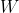

with respect to step by step:
with respect to step by step:In this tutorial we manually build the graph for a basic linear classifier. We will use the sigmoid activation function and the binary cross entropy loss function. We will train the model using standard gradient descent.
If you want to skip straight to the full code, you can find it on my GitHub here.
Up front, the important bits to know:
The forward pass of the binary cross entropy loss function is:
Intuitively, the ground truth is either 0 or 1, and the loss is the negative log likelihood of the predicted probability given the ground truth. Sometimes this is normalized by the number of samples , but it’s not needed (and pytorch drops it).
Keeping in mind that
We compute the derivative of with respect to step by step:
![\begin{array}{rl}
\frac{\partial{L}}{\partial{\hat{y}}} &= -y (\frac{\partial{\log(\hat{y})}}{\partial{\hat{y}}}) - (1 - y) (\frac{\partial{\log(1-\hat{y})}}{\partial{\hat{y}}})\textup{ ; Substitute in log definitions}\\
&= -y (\frac{1}{\hat{y}}) - (1 - y) (- \frac{1}{1 - \hat{y}})\\
&= \frac{-y}{\hat{y}} + (1 - y) ( \frac{1}{1 - \hat{y}})\textup{ ; Simplify}\\
&= \frac{-y}{\hat{y}} + \frac{(1 - y)}{1 - \hat{y}}\\
&= \frac{-y(1 - \hat{y})}{\hat{y} (1 - \hat{y}) } + \frac{\hat{y}(1 - y)}{\hat{y}(1 - \hat{y})}\\
&= \frac{-y(1 - \hat{y}) + \hat{y}(1 - y) }{\hat{y}(1 - \hat{y})}\\
&= \frac{(-y - -y\hat{y}) + (\hat{y} - \hat{y}y) }{\hat{y} - \hat{y}^2}\\
&= \frac{\hat{y} -y }{\hat{y} - \hat{y}^2}
\end{array}](../../img/compiled/nn_from_scratch/c1cf7c783c532f7b9dac0e9d67c3b0f5.png "\begin{array}{rl}
\frac{\partial{L}}{\partial{\hat{y}}} &= -y (\frac{\partial{\log(\hat{y})}}{\partial{\hat{y}}}) - (1 - y) (\frac{\partial{\log(1-\hat{y})}}{\partial{\hat{y}}})\textup{ ; Substitute in log definitions}\\
&= -y (\frac{1}{\hat{y}}) - (1 - y) (- \frac{1}{1 - \hat{y}})\\
&= \frac{-y}{\hat{y}} + (1 - y) ( \frac{1}{1 - \hat{y}})\textup{ ; Simplify}\\
&= \frac{-y}{\hat{y}} + \frac{(1 - y)}{1 - \hat{y}}\\
&= \frac{-y(1 - \hat{y})}{\hat{y} (1 - \hat{y}) } + \frac{\hat{y}(1 - y)}{\hat{y}(1 - \hat{y})}\\
&= \frac{-y(1 - \hat{y}) + \hat{y}(1 - y) }{\hat{y}(1 - \hat{y})}\\
&= \frac{(-y - -y\hat{y}) + (\hat{y} - \hat{y}y) }{\hat{y} - \hat{y}^2}\\
&= \frac{\hat{y} -y }{\hat{y} - \hat{y}^2}
\end{array}")
The forward pass of the sigmoid activation function is:
Keeping in mind that
We compute the derivative of  with respect to step by step:
with respect to step by step:
![\begin{array}{rl}
\frac{\partial{\sigma}}{\partial{x}} &= \frac{\partial}{\partial{u}} \cdot \frac{1}{u} \cdot \frac{\partial{u}}{\partial{x}}; u = 1 + e^{-x} \textup{ ; u substitution} \\
&= -\frac{1}{u^2} \cdot \frac{\partial{u}}{\partial{x}} \textup{ ; Substitute in fraction derivative} \\
&= -\frac{1}{(1 + e^{-x})^2} \cdot \frac{\partial}{\partial{x}} 1 + e^{-x} \\
&= -\frac{1}{(1 + e^{-x})^2} \cdot -e^{-x} \textup{ ; Substitute in natural exponent} \\
&= \frac{e^{-x}}{(e^{-x} + 1)^2}
\end{array}](../../img/compiled/nn_from_scratch/d46ecee38fd02fe6febe37fe4f50e075.png "\begin{array}{rl}
\frac{\partial{\sigma}}{\partial{x}} &= \frac{\partial}{\partial{u}} \cdot \frac{1}{u} \cdot \frac{\partial{u}}{\partial{x}}; u = 1 + e^{-x} \textup{ ; u substitution} \\
&= -\frac{1}{u^2} \cdot \frac{\partial{u}}{\partial{x}} \textup{ ; Substitute in fraction derivative} \\
&= -\frac{1}{(1 + e^{-x})^2} \cdot \frac{\partial}{\partial{x}} 1 + e^{-x} \\
&= -\frac{1}{(1 + e^{-x})^2} \cdot -e^{-x} \textup{ ; Substitute in natural exponent} \\
&= \frac{e^{-x}}{(e^{-x} + 1)^2}
\end{array}")
We will use the following notation for matrix calculus for the forward pass
Where  is the weight matrix, is the input, is the bias, and is the output. The gradient of with respect to and is:
These partial definitions are all we need to write the code for the layer pieces. Note I am using dataclasses to make the code more readable, but these could be dictionaries or named tuples.
import numpy as np
from dataclasses import dataclass
@dataclass
class BinaryCrossEntropyLossPartials:
output_wrt_yhat: np.ndarray
class BinaryCrossEntropyLoss:
def forward(self, yhat: np.ndarray, y: np.ndarray):
assert yhat.shape == y.shape, f"Shape difference: {yhat} vs {y}"
assert np.all(1 >= yhat) and np.all(yhat >= 0), f"Domain error for yhat: {yhat}"
assert np.all(1 >= y) and np.all(y >= 0), f"Domain error for y: {y}"
# We drop the 1/len(yhat) factor to make the loss the same as torch's BCE loss
loss = -(y * np.log(yhat) + (1 - y) * np.log(1 - yhat))
# clamp the loss entries to at most 100 to avoid nan (and like torch's BCE loss)
loss = np.clip(loss, -100, 100)
return loss
def backwards(
self, yhat: np.ndarray, y: np.array
) -> BinaryCrossEntropyLossPartials:
output_wrt_yhat = (yhat - y) / (yhat - yhat**2)
return BinaryCrossEntropyLossPartials(output_wrt_yhat)
@dataclass
class LinearPartials:
output_wrt_weight: np.ndarray
output_wrt_bias: np.ndarray
class Linear:
def __init__(self, in_features: int, out_features: int) -> None:
self.in_features = in_features
self.out_features = out_features
self.weight = np.random.randn(out_features, in_features).astype(np.float32)
self.bias = np.random.randn(out_features).astype(np.float32)
def forward(self, x: np.ndarray) -> np.ndarray:
return self.weight @ x + self.bias
def backward(self, x: np.ndarray) -> LinearPartials:
output_wrt_weight = x
output_wrt_bias = np.ones_like(self.bias)
return LinearPartials(output_wrt_weight, output_wrt_bias)
@dataclass
class SigmoidPartials:
output_wrt_x: np.ndarray
class Sigmoid:
def forward(self, x: np.ndarray) -> np.ndarray:
return 1 / (1 + np.exp(-x))
def backward(self, x: np.ndarray) -> SigmoidPartials:
output_wrt_x = np.exp(-x) / ((np.exp(-x) + 1) ** 2)
return SigmoidPartials(output_wrt_x)Unlike PyTorch, we will manually build the graph for our network. We will use the following architecture:
with the binary cross entropy loss function.
We define 3 methods for our network: forward,
forward_loss, and update_weights. The
forward method is the forward pass of the network, the
forward_loss method is the forward pass of the network with
the loss function, and the update_weights method is the
backward pass of the network with the loss function and the update of
the weights.
class MyNetwork:
def __init__(self, in_features: int, out_features: int):
self.in_features = in_features
self.out_features = out_features
self.linear1 = Linear(in_features, out_features)
self.sigmoid = Sigmoid()
self.loss = BinaryCrossEntropyLoss()
def forward_loss(self, x: np.ndarray, y: np.ndarray):
sigmoid_out = self.forward(x)
loss_out = self.loss.forward(sigmoid_out, y)
return loss_out.sum()
def forward_loss(self, x: np.ndarray, y: np.ndarray):
forward_out = self.linear1.forward(x)
sigmoid_out = self.sigmoid.forward(forward_out)
loss_out = self.loss.forward(sigmoid_out, y)
return loss_out.sum()
def update_weights(self, x: np.ndarray, y: np.ndarray, lr: float):
forward_out = self.linear1.forward(x)
sigmoid_out = self.sigmoid.forward(forward_out)
loss_wrt_sigmoid = self.loss.backwards(sigmoid_out, y).output_wrt_yhat
sigmoid_wrt_linear1 = self.sigmoid.backward(forward_out).output_wrt_x
linear1_wrt_weight = self.linear1.backward(x).output_wrt_weight
linear1_wrt_bias = self.linear1.backward(x).output_wrt_bias
loss_wrt_linear1 = loss_wrt_sigmoid * sigmoid_wrt_linear1
# Note: outer product because matrix multiplication!
loss_wrt_weight = np.outer(loss_wrt_linear1, linear1_wrt_weight)
loss_wrt_bias = loss_wrt_linear1 * linear1_wrt_bias
self.linear1.weight = self.linear1.weight - lr * loss_wrt_weight
self.linear1.bias = self.linear1.bias - lr * loss_wrt_biasNote the tricky bits in here: we have to take the outer product
between the partial loss_wrt_linear1 and
linear1_wrt_weight because we are doing matrix
multiplication. The weight matrix is of shape
(out_features, in_features) and the gradient with respect
to needs to be the same shape, and this
shape is formed by the inner product of the input vector (the derivative of with respect to ) and the weights.
To train the network, I give it some sample data. Note the rule for the data is the first element is an indicator variable for the ground truth label, making this easy data to fit.
# Set np seed
np.random.seed(42)
# fmt: off
sample_inputs = [[1, 3, 5], [1, 9, 5], [1, 2, 5], [0, 9, 5], [0, 0, 5]]
sample_outputs = [[1, 0, 0, 0], [1, 0, 0, 0], [1, 0, 0, 0], [0, 0, 0, 0], [0, 0, 0, 0]]
# fmt: on
net = MyNetwork(3, 4)
lr = 0.01
for epoch_idx in range(2000):
total_loss = 0
for np_x, np_y in zip(sample_inputs, sample_outputs):
np_x = np.array(np_x).astype(np.float32)
np_y = np.array(np_y).astype(np.float32)
total_loss += net.forward_loss(np_x, np_y)
net.update_weights(np_x, np_y, lr)
print(f"Epoch: {epoch_idx} Loss: {total_loss}")and our training prints out the loss as it goes:
...
Epoch: 1997 Loss: 0.2139563336968422
Epoch: 1998 Loss: 0.21384888887405396
Epoch: 1999 Loss: 0.2137417010962963